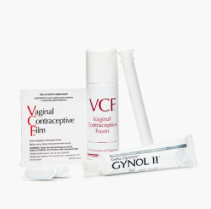
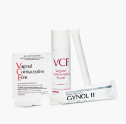

BIRTH CONTROL AND STI PREVENTION
Birth control is used to prevent unwanted pregnancy and STI prevention is used to prevent the spread of STIs

CONDOM
Condoms are the most common type of birth control method. These thin pouches are made from either latex, plastic, or lambskin. This is a male condom that prevents sperm from entering the vagina and uterus, which means that the sperm cannot come in contact with the egg resulting in preventing pregnancy. This method is 85% effective and protects against STDs.
IMPLANT
The Implant is a hormonal birth control that is inserted under the skin on the upper arm, and is only about the size of a matchstick. This form of birth control can last up to 5 years, 99% effective and does not protect against STDs.

DIAPHRAGM
A diaphragm is a form of birth control that's a shallow cup, shaped like a little saucer that's made of soft silicone. You bend it in half and insert it inside your vagina to cover your cervix. This method is 88% effective and does not protect against STDs.
PATCH
The patch is a wallet friendly form of birth control. It is a patch applied to either the upper arm, butt, back, or belly, where it releases estrogen and progestin into the body to prevent pregnancy. You wear the patch for a week and replace it with another patch for a duration of three weeks. The fourth week is a week where you have your period and restart the cycle the following week. This method is 91% effective and does not protect against STDs.
INTERNAL CONDOM
This type of condom offers the same benefits as a regular condom, but goes into the vagina rather than the penis, which is why it is often referred to as the "female condom". This cannot be used in adjacent with the male condom, as the friction between the two can cause them to break. This method is 79% effective and can protect against STDs.
SPONGE
The sponge is a sponge that is inserted into the vagina and blocks sperm from reaching the cervix. Sponges have spermicide that also kills sperm to provide even more protection against pregnancy. They are 76-88% effective and do not protect against STDs.
WITHDRAWL
The "pull out" method is when the person pulls the penis out out of the vagina before ejaculating. This is a circumstantial method, meaning everyone is different and some might mess up when attempting to do this method. This method is best when combined with other birth control such as hormonal birthcontrol. This method is 78% effective and does not protect against STDs.
IUD
The IUD stands for intrauterine device. There are two types of IUDs you can get, the first being the Progestin IUD, which is a plastic T-shape device that is inserted by a medical professional into the uterus. There are 3 hormonal IUDs, they are the Mirena, Skyla, and Liletta, which last 3-6 years. The second is the Copper IUD, which is similar to the Progestin, but is made with copper and lasts longer. An example of this IUD is the ParaGard which can last 12 years and is 99% effective.
THE PILL
An oral contraceptive pill, a hormone-based method of preventing pregnancy. It can also help solve irregular menstruation, painful or heavy periods, endometriosis, acne, and premenstrual syndrome (PMS). There are different types of contraceptive pills. They all contain synthetic forms of the hormones estrogen, progesterone, or both. Synthetic progesterone is called progestin. Combination pills contain progestin and estrogen. The "mini pill," contains only progestin. Monophasic pills all contain the same balance of hormones.
SPERMICIDE
Spermicide is a type of contraceptive that slow down the sperm. You insert spermicide in the vagina before sex. The chemicals in the spermicide, such as nonoxynol-9, prevent sperm from entering the uterus. You can get spermicide over-the-counter. It's available in many forms, including cream, gel, foam, film, suppository and tablet. This method is 71%, does not protect against STDs, and has to be used with diaphragms and cervical caps.
VAGINAL RING
The vaginal ring is a small flexible ring that is inserted into the vagina by yourself. It releases estrogen and progestin in your body that stops the sperm from interacting with the egg. This ring stops ovulation from happening if worn correctly. This contraception needs to be changed monthly and is 91% effective.

CERVICAL CAP
The cervical cap is a birth control (contraceptive) device that prevents sperm from entering the uterus. The cervical cap is a reusable, deep silicone cup that is inserted into the vagina and fits tightly over the cervix. The cervical cap is held in place by suction and has a strap to help with removal. The cervical cap is effective at preventing pregnancy only when used with spermicide. This method is 71-86% effective and does not protect against STDs.
BIRTH CONTROL SHOT
The birth control shot is a shot that has to be given every three months, in order to stay effective. It releases the hormone progestin into your body, while also making your vaginal mucus thicker in order to prevent pregnancy. This method is 94% effective, but does not protect against STDs.

ABSTINENCE
Abstinence can be defined in many ways from no form of sexual contact to non penetrative sex. If you practice abstinence and do not have penis to vagina sex, there is 100% effectiveness of not getting pregnant. Depending on the level of abstinence practice, this would determine your risk of STDs.
CONDOM
Condoms are the most common type of birth control method. These thin pouches are made from either latex, plastic, or lambskin. This is a male condom that prevents sperm from entering the vagina and uterus, which means that the sperm cannot come in contact with the egg resulting in preventing pregnancy. This method is 85% effective and protects against STDs.IMPLANT
The Implant is a hormonal birth control that is inserted under the skin on the upper arm, and is only about the size of a matchstick. This form of birth control can last up to 5 years, 99% effective and does not protect against STDs. DIAPHRAGM
A diaphragm is a form of birth control that's a shallow cup, shaped like a little saucer that's made of soft silicone. You bend it in half and insert it inside your vagina to cover your cervix. This method is 88% effective and does not protect against STDs.PATCH
The patch is a wallet friendly form of birth control. It is a patch applied to either the upper arm, butt, back, or belly, where it releases estrogen and progestin into the body to prevent pregnancy. You wear the patch for a week and replace it with another patch for a duration of three weeks. The fourth week is a week where you have your period and restart the cycle the following week. This method is 91% effective and does not protect against STDs.INTERNAL CONDOM
This type of condom offers the same benefits as a regular condom, but goes into the vagina rather than the penis, which is why it is often referred to as the "female condom". This cannot be used in adjacent with the male condom, as the friction between the two can cause them to break. This method is 79% effective and can protect against STDs.SPONGE
The sponge is a sponge that is inserted into the vagina and blocks sperm from reaching the cervix. Sponges have spermicide that also kills sperm to provide even more protection against pregnancy. They are 76-88% effective and do not protect against STDs.WITHDRAWL
The "pull out" method is when the person pulls the penis out out of the vagina before ejaculating. This is a circumstantial method, meaning everyone is different and some might mess up when attempting to do this method. This method is best when combined with other birth control such as hormonal birthcontrol. This method is 78% effective and does not protect against STDs.IUD
The IUD stands for intrauterine device. There are two types of IUDs you can get, the first being the Progestin IUD, which is a plastic T-shape device that is inserted by a medical professional into the uterus. There are 3 hormonal IUDs, they are the Mirena, Skyla, and Liletta, which last 3-6 years. The second is the Copper IUD, which is similar to the Progestin, but is made with copper and lasts longer. An example of this IUD is the ParaGard which can last 12 years and is 99% effective.THE PILL
An oral contraceptive pill, a hormone-based method of preventing pregnancy. It can also help solve irregular menstruation, painful or heavy periods, endometriosis, acne, and premenstrual syndrome (PMS). There are different types of contraceptive pills. They all contain synthetic forms of the hormones estrogen, progesterone, or both. Synthetic progesterone is called progestin. Combination pills contain progestin and estrogen. The "mini pill," contains only progestin. Monophasic pills all contain the same balance of hormones.
SPERMICIDE
Spermicide is a type of contraceptive that slow down the sperm. You insert spermicide in the vagina before sex. The chemicals in the spermicide, such as nonoxynol-9, prevent sperm from entering the uterus. You can get spermicide over-the-counter. It's available in many forms, including cream, gel, foam, film, suppository and tablet. This method is 71%, does not protect against STDs, and has to be used with diaphragms and cervical caps.VAGINAL RING
The vaginal ring is a small flexible ring that is inserted into the vagina by yourself. It releases estrogen and progestin in your body that stops the sperm from interacting with the egg. This ring stops ovulation from happening if worn correctly. This contraception needs to be changed monthly and is 91% effective.CERVICAL CAP
The cervical cap is a birth control (contraceptive) device that prevents sperm from entering the uterus. The cervical cap is a reusable, deep silicone cup that is inserted into the vagina and fits tightly over the cervix. The cervical cap is held in place by suction and has a strap to help with removal. The cervical cap is effective at preventing pregnancy only when used with spermicide. This method is 71-86% effective and does not protect against STDs.BIRTH CONTROL SHOT
The birth control shot is a shot that has to be given every three months, in order to stay effective. It releases the hormone progestin into your body, while also making your vaginal mucus thicker in order to prevent pregnancy. This method is 94% effective, but does not protect against STDs.